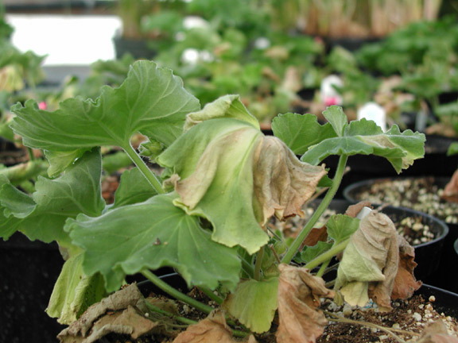

Aeromonas
Did you know that...
IDENTITY
Name: Ralstonia solanacearum (Smith) Yabuuchi et al.
Synonyms: Bacterium solanacearum (Smith) Chester;
Burkholderia solanacearum (Smith) Yabuuchi et al. (1992);
Pseudomonas solanacearum (Smith) Smith;
Taxonomic position: Bacteria: Gracilicutes
Common names: Brown rot (potato), southern bacterial wilt (tomato);
Moko disease (banana), Granville wilt (tobacco) (English);
Pourriture brune, Bactériose vasculaire (French);
Braunfäule, Schleimkrankheit der Kartoffel (German);
Podredumbre parda de la patata (Spanish)
Notes on taxonomy and nomenclature: In a taxonomic study of certain non-fluorescent species of the genus Pseudomonas (Yabuuchi et al., 1992), the genus Burkholderia was proposed to encompass the variation found in this group and the name Burkholderia solanacearum was proposed. Subsequent study of this genus revealed that R. solanacearum was sufficiently distinct from other members of the genus to warrant assignment to the newly proposed genus Ralstonia (Yabuuchi et al., 1995).
Additional Information
R. Solanacearum has an extremely wide host range
Disease in Humans
R. solanacearum as a species has an extremely wide host range, but different pathogenic varieties (races) within the species may show very limited host ranges. Within the EPPO region, the race which is now present and has potential for spread is race 3 (see below) with a limited host range, including in particular potatoes (Solanum tuberosum), tomatoes (Lycopersicon esculentum) and the weed Solanum dulcamara. Over 200 species, especially tropical and subtropical crops, are susceptible to one or other of the races of R. solanacearum. Worldwide, the most important are: tomatoes, Musa spp., tobacco (Nicotiana tabacum) and potatoes. Some minor host crops are: Anthurium spp., groundnuts (Arachis hypogaea), Capsicum annuum, cotton (Gossypium hirsutum), rubber (Hevea brasiliensis), cassava (Manihot esculenta), castor beans (Ricinus communis), aubergines (Solanum melongena) and ginger (Zingiber officinalis). Many weeds are also hosts of the pathogen and therefore increase the potential of R. solanacearum to build up inoculum. For extensive host lists, see Kelman (1953), Bradbury (1986), Persley (1986a), Hayward (1994a).
Back